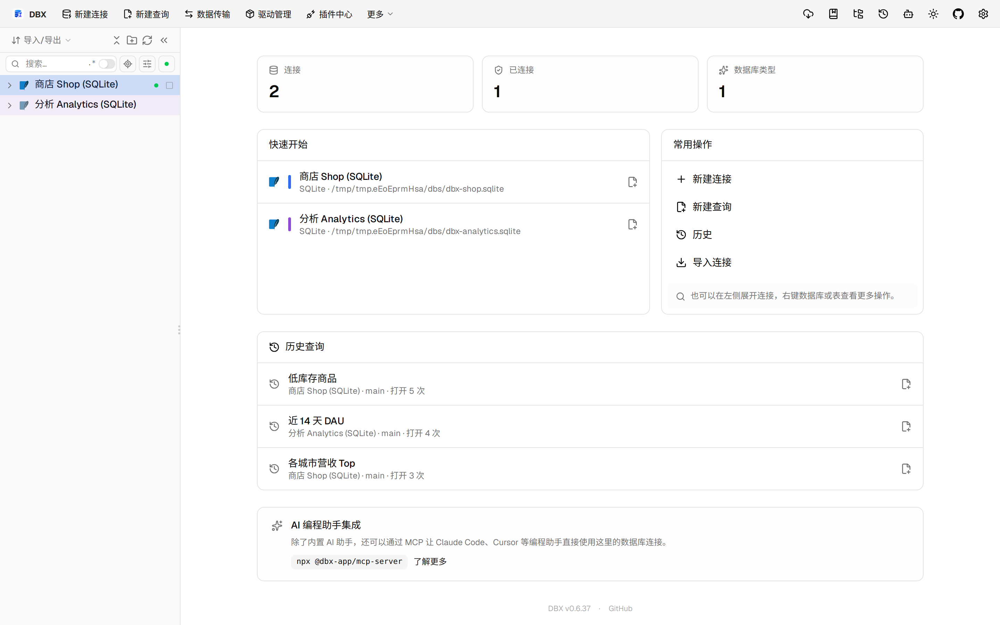
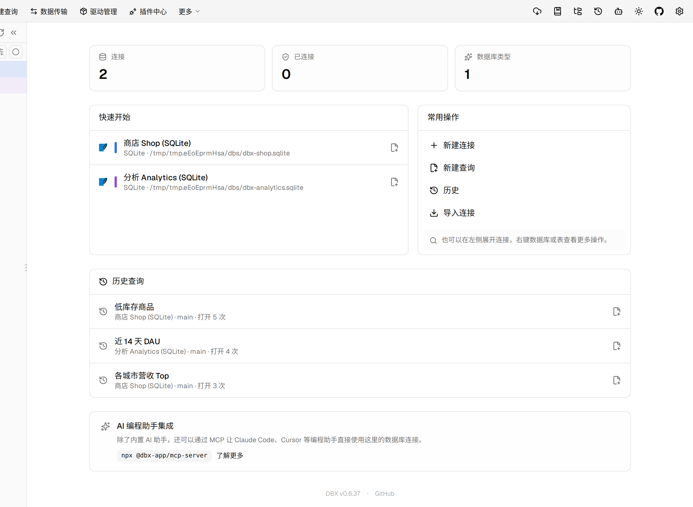
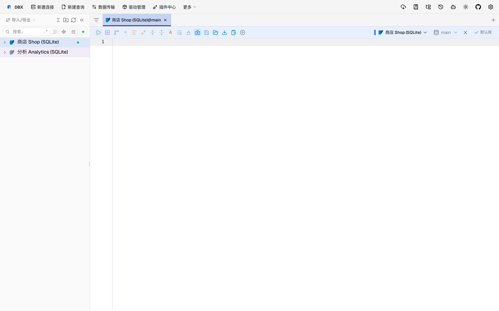

#11394 界面预览
commit 7fb0e7c · 回到 PR · 前端把已有触发器草稿的结构化编辑限制扩展到了 OceanBase Oracle：已有草稿现在与 Oracle 一样变为只读，而新建触发器草稿仍可结构化编辑。相关的 DDL 生成也补了 OceanBase Oracle 的已有触发器编辑警告和删除路径。
⚠️ 这次录制有 8 步没能按计划执行；带 ⚠️ 的截图拍摄于步骤失败之后，画面未必是说明文字所描述的状态。
红线是鼠标走过的轨迹，红色圆环是一次点击；底部文字是这一步在做什么。多个场景各自从应用初始状态开始。空格暂停，← → 逐段查看。

⚠️ 触发器结构编辑入口 · 打开订单表后的数据网格
 ⚠️ 触发器结构编辑入口 · 查看触发器结构编辑区域和已有触发器草稿位置
⚠️ 触发器结构编辑入口 · 查看触发器结构编辑区域和已有触发器草稿位置

⚠️ 已有触发器编辑限制 · 在表结构编辑器中查看触发器草稿列表与编辑区域位置

新建触发器仍可编辑 · 保留触发器编辑入口所在页面的位置